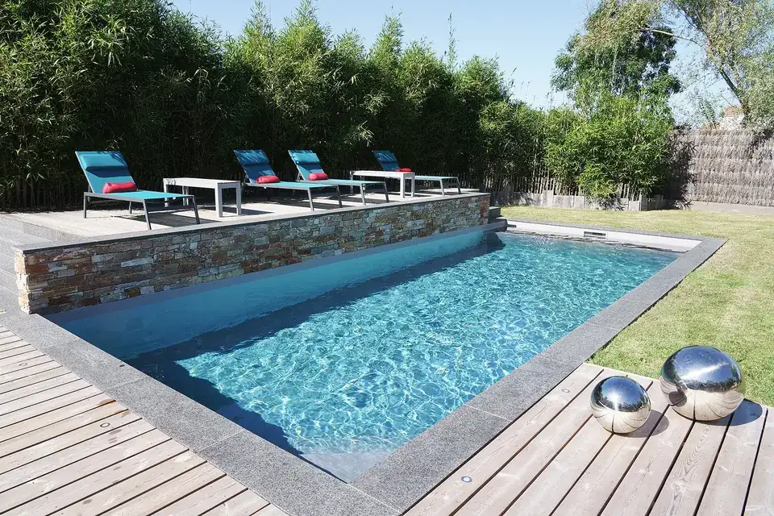
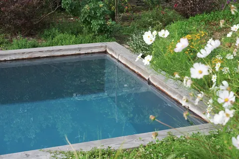
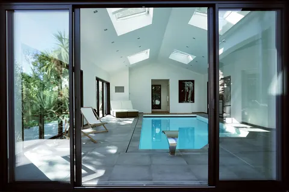
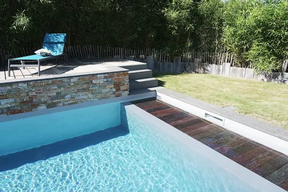
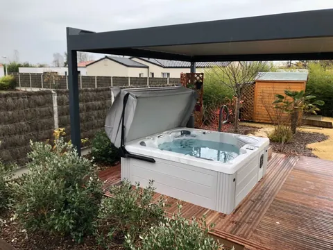
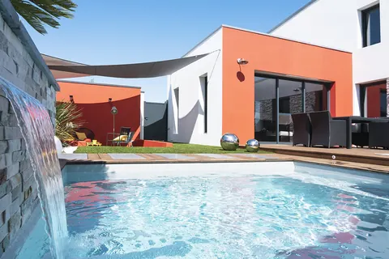
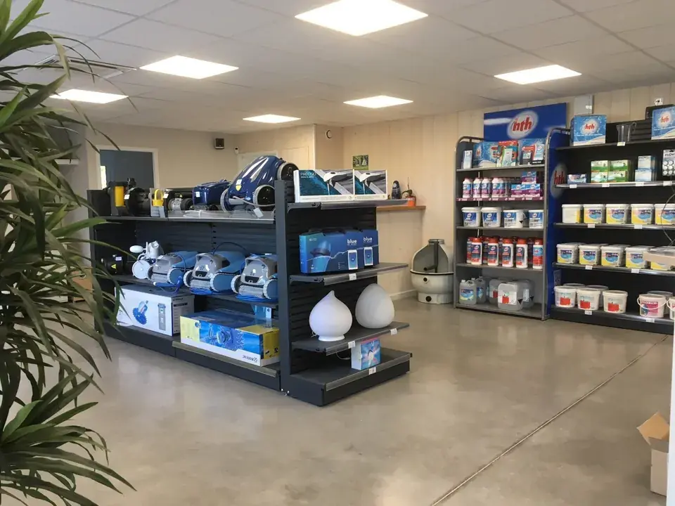

Construction et entretien de piscines à Saint-Jean-de-Monts, depuis 1996.
Piscines traditionnelles maçonnées, rénovation, contrats d’entretien et SAV. Une équipe de 12 personnes et un showroom ouvert du lundi au samedi.
4,9 sur 5, 117 avis Google (fiche relevée le 11/11/2026)
Appeler le 02 51 59 39 69Lundi au samedi, 9 h–12 h 30 et 14 h–18 h 30.

La même équipe, de la construction à l’hivernage.
Construire, rénover, entretenir, dépanner : vous gardez un seul interlocuteur, à Saint-Jean-de-Monts.
Construction
Piscines traditionnelles en structure maçonnée, dessinées selon vos souhaits et la configuration de votre jardin.
La construction de piscineRénovation
Le bassin ne vous ressemble plus, le matériel vieillit : on repense le projet ou on remplace les équipements.
La rénovationEntretien
Plusieurs formules de contrat, toutes avec la mise en service en début de saison et l’hivernage.
Les contrats d’entretienSAV
Des techniciens formés au matériel de piscine diagnostiquent et réparent vos équipements en panne.
Le dépannageSpas
Une trentaine de modèles, du spa deux places au spa de nage, dont plusieurs exposés au showroom.
Les spas
Nos réalisations, en photos.
Quatre piscines et un spa, choisis parmi les photos publiées par l’entreprise.

Photo © Piscines Océanes 
Photo © Piscines Océanes 
Photo © Piscines Océanes 
Photo © Piscines Océanes 
Photo © Piscines Océanes
4,9 sur 5, sur 117 avis Google.
Note et nombre relevés sur la fiche Google de l’entreprise le 11 novembre 2026.
Le showroom, ouvert toute l’année.
On y analyse votre eau, pour vous conseiller le traitement adapté.

- Produits de traitement pour piscine et spa
- Robots, aqua-bikes, matériel et équipements
- Plusieurs spas exposés
Horaires
- Lun.–sam.
- 9 h–12 h 30
14 h–18 h 30 - Dimanche
- Fermé
Paiement par chèque, carte bancaire, espèces ou virement. On vous reçoit en français ou en anglais.
85160 Saint-Jean-de-Monts
Itinéraire vers le showroom
Un projet, une rénovation, une panne ?
Dites-nous où se trouve le bassin et ce que vous voulez faire. On vous répond du lundi au samedi.
- Saint-Gilles-Croix-de-Vie
- Challans
- Noirmoutier
Ou par écrit : contact@piscinesoceanes.fr